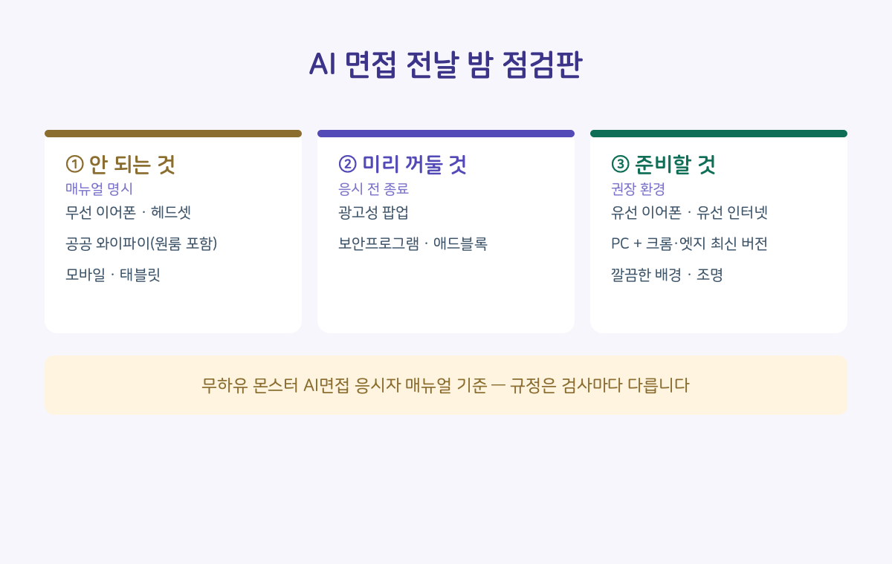
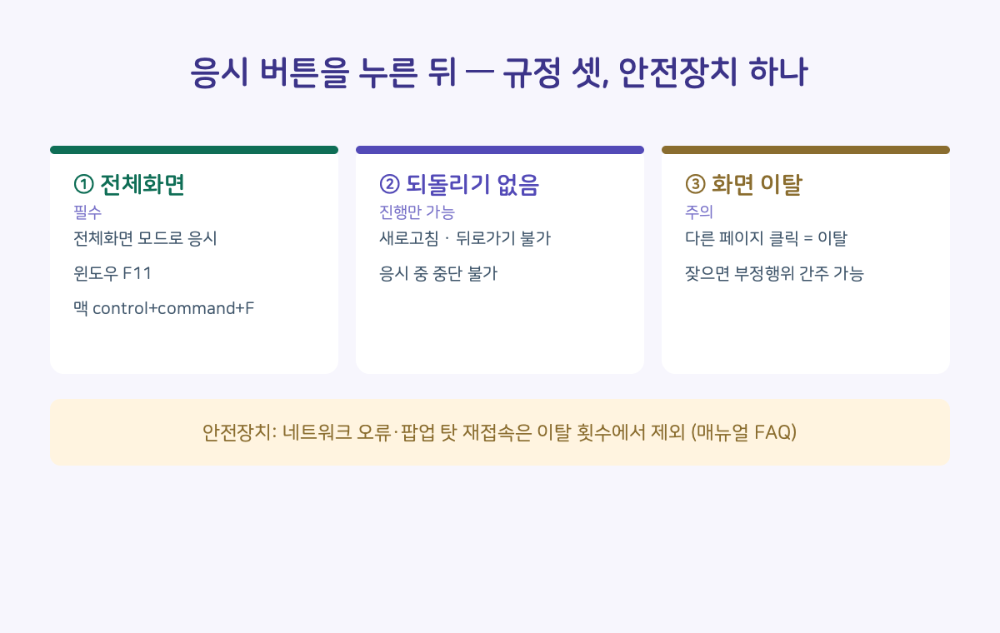

내일이 AI 면접이라면, 오늘 밤 제일 실속 있는 준비는 답변 연습이 아니라 환경 점검일 수 있습니다. 안내 메일에 링크된 공식 매뉴얼에는 검색으로는 잘 안 나오는 규정이 꽤 있는데, 응시 화면 앞에서야 알게 되면 늦는 것들입니다. 그래서 무하유 '몬스터' AI면접의 응시자 매뉴얼을 처음부터 끝까지 읽어봤습니다. 로그인 없이 열람할 수 있는 문서입니다.
■ 전날 밤에 알아야 하는 것들
무선 이어폰과 헤드셋은 이용 불가입니다. 내장 마이크나 유선 이어폰을 쓰라고 안내합니다. 공공 와이파이도 이용 불가인데, 그 목록에 학교·카페와 함께 원룸이 들어 있습니다. 유선 인터넷 권장입니다. 모바일과 태블릿은 응시 자체가 안 되고(PC·노트북만), 브라우저는 크롬·엣지 최신 버전만 지원합니다(인터넷 익스플로러·사파리·파이어폭스 미지원). 맥북이라면 기본 브라우저인 사파리가 안 되니 크롬 설치가 먼저입니다. 광고성 팝업, 보안프로그램, 애드블록은 미리 꺼두라는 안내도 있습니다.

얼굴 인식 항목은 더 구체적입니다. 역광이면 자리를 옮기라고 하고, 안경테가 짙고 두꺼우면 안경을 바꾸라고 안내합니다. 책장처럼 물건이 많은 배경도 인식이 어려울 수 있다고 적혀 있습니다.
■ 응시 버튼을 누른 뒤의 규정
전체화면 모드가 필수입니다. 단축키는 윈도우 F11, 맥은 control+command+F인데, 매뉴얼의 맥 표기(Fn+Ctrl+F)는 애플 공식 문서의 표준 단축키와 다르게 적혀 있었습니다. 응시 중에는 중단이 불가하고, 새로고침과 뒤로가기를 쓸 수 없습니다. 다른 페이지를 클릭하면 화면 이탈로 간주되고, 잦은 이탈은 부정행위로 간주될 수 있다고 적혀 있습니다.
그런데 구제 조항도 같이 있습니다. 네트워크 오류나 광고성 팝업, 기기 오류로 인한 이탈은 이탈 횟수에서 제외된다고 자주 묻는 질문에 명시돼 있습니다. 매뉴얼을 읽은 사람만 아는 안전장치입니다. 다만 임의로 컴퓨터를 껐다 켜서 재응시한 것이 적발되면 불이익이 있을 수 있다는 경고도 바로 옆에 있습니다.
시간 규정도 의외였습니다. 응시기간 안에는 24시간 아무 때나 응시할 수 있지만, 문제가 생겼을 때 지원을 받으려면 평일 10~17시 응시를 권장한다고 적혀 있습니다. 마감 직전 새벽 응시가 제일 위험한 조합인 셈입니다.

■ 오늘 밤 할 일은 하나입니다
여기까지는 한 솔루션 기준이고, 규정은 검사와 기업마다 다릅니다. 그래서 진짜 체크리스트 1번은 내 안내 메일에 링크된 매뉴얼을 오늘 밤 정독하는 것입니다. 읽으면서 안내 문구와 서비스명은 캡처해 두세요. 나중에 무언가 확인할 일이 생겼을 때, 출발점은 언제나 내 손의 기록입니다.
댓글로 알려주세요. 응시 안내를 받았을 때 매뉴얼을 읽고 들어갔다 / 안 읽고 들어갔다 — 한 줄이면 됩니다.
근거: 무하유 「몬스터 AI면접」 응시자 매뉴얼 / 2026.8. 원문 확인. 맥 단축키는 애플 공식 문서 기준. 응시 규정은 기업·솔루션마다 다릅니다.
이 매뉴얼은 8월 초에 한 번 확인했던 자료인데, 게시 전에 다시 열어보니 같은 회사 문서가 검사 종류별로 여러 벌이었습니다. 다른 검사용 문서에는 무선 이어폰 규정이 '주의' 수준으로만 적혀 있어서, AI면접용 문서를 다시 찾아 규정 전부를 재대조했습니다.